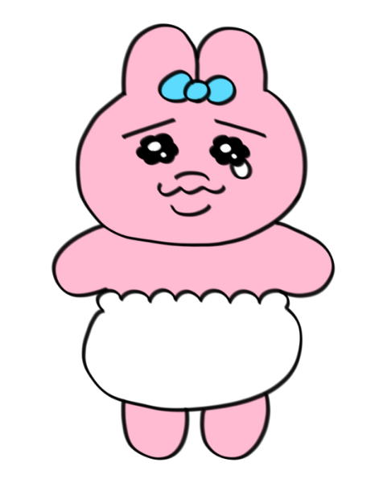
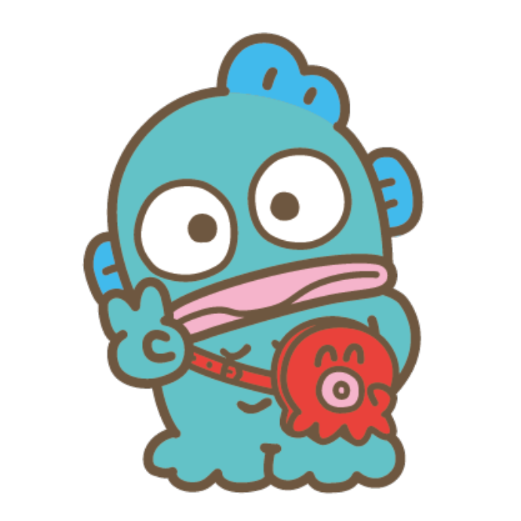

Lui Lok Man
Hello! I am a year 3 student who is studying linguistic as major. My favourite characters are opanchu usagi (underwear rabbit) and hangyodon. I am also a fan of J-pop and classical music. I study this course because I have nothing else to choose but anyway I will try my best in learning programming.

My favourite character: Opanchu Usagi

My favourite character: hangyodon
Below are my favourite songs recently:
- Ac1:👍🏻👍🏻👍🏻 (many varities of food and quite cheap)
- Ac2:no comment (cannot find any word to describle how bad it is)
- Ac3:👍🏻 (expensive)
Nice to meet you all!!
Reference:
https://web-japan.org/trends/11_culture/pop202403_character.html
https://www.sanrio.com.hk/tc/character-detail/hangyodon